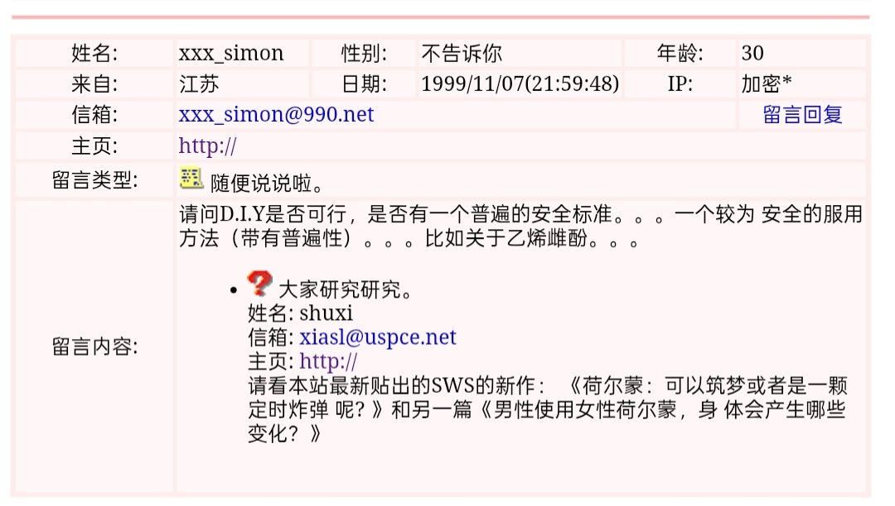

🌙艾丝尔娜·芙蕾琳🌙ᴹᴷ⁻ᴱᵐᵇᵉʳ
@AacerF59616
以现在的眼光来看，她们的DIY GAHT方案普遍欠佳，甚至说是“乱吃”也不为过，但我们如今很多可以直接浏览的资料都是她们在几乎没有了解方式的情况下以身试药慢慢总结归纳出来的，很敬佩先行者们的勇敢

Yzmt🏳️⚧️
@Yzmtsky6666
那个年代的人居然想用己烯雌酚自制hrt药物，殊不知己烯雌酚有很强的致癌性……
前辈们拿命试出效果，从最初的螺到后来的色50，25，12.5，6.25
从己烯雌酚到贴片
当时的她们坐在crt显示器前进入到一片小天地中畅游，现如今的mtf，则变成了od，割手，切🥚的样子
如果她们看到现在的场景，会说些什么呢？ https://t.co/ypW61T0ZAa